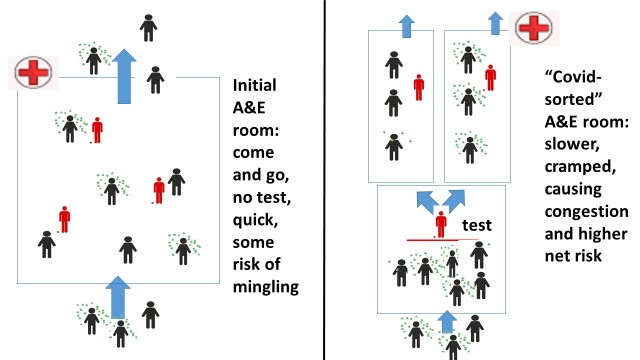

Consider the picture below of two hypothetical Accident and Emergency departments (A&E), one that has no covid-regulations and simply has the available nurses trying to help all comers as fast as possible. In the other one the nurses try to prevent mingling by testing newcomers (or do some other form of screening) in one part of the A&E and then funneling the patients, causing a queue that is an ideal infection place for covid.

In this picture, the covid-infected are the ones with little green dots floating around them. The red figures are the nurses. In the left-hand side situation patients come and go, helped relatively quickly by the three nurses who do nothing but help patients. You see that using the whole space as much as possible means most patients are spaced relatively widely anyway, so there will be some close-encounter mingling but not much.
The right-hand side situation depicts the same hypothetical A&E where they got extremely worried about being criticised for mingling patients. So the manager of that A&E decided to become ‘responsible’ and demand all comers get a covid-test (or questionnaire) administered by one of the nurses behind the red line. The covid-infected are then subsequently put in one sealed part of the hospital whilst the uninfected go to another part, helped by different nurses.
Note the congestion effect in this hypothetical example (which is inspired by the eye-witness account of an actual nurse: see this nurse statement Jan 29th lockdown sceptics): because the test (or questionnaire) takes time, you now have a much longer mingling of patients before being helped, whilst there are also fewer nurses actually helping, which further increases the queue. So that waiting room becomes smaller, more crowded, and exactly full of the wrong people: infected and non-infected bunched up for a considerable length of time. The total infection numbers are far higher in the right-hand side situation than the left-hand side as a result of the ‘covid-safe’ policies of the A&E manager. This is an example of covid-congestion effects: congestion caused by well-meaning rules designed to prevent infections in fact cause more of them.
Of course you can think of counter-reactions to the problem in the A&E example: move the queue outside, have tests done off-facility, ask everyone to wear masks, tell people not to come to hospitals, stop treating people altogether, etc. Each of these counter-reactions has actually been implemented in the UK but have simply caused other types of congestion problems that I will explain more fully later on. For now, just consider that in winter weather you cannot let very ill patients stand outside in the cold rain, whilst masks at best reduce the inflow of infections a bit but don’t count on them when people are exposed for any length of time. Also, telling people not to come to A&E means infected people are untested, getting worse without early treatment (so more likely to die) and also infecting people elsewhere. The congestion effects hence simply cannot be avoided if you reserve a large slice of your health space and health staff for covid-avoidance activities like testing and re-organising: however you slice it, you are then reducing the productivity of the health system which means less care and a larger queue somewhere of people getting more and more ill, hence more vulnerable and infectious.
If you look closely at the way the health system operates in the UK, but also in other countries, you see an awful lot of these kinds of congestion effects: the creation of bunched up patient groups because some part of the system has become very concerned with being seen to fight against infections in a way that reduces their productivity and their available space. This is my suggested explanation for the curious phenomenon that the more stringent the lock-downs in Europe and the Americas, the higher the covid death toll often is. Over the fold I unpack this phenomenon in greater length and give more examples of covid-congestion effects at many levels. I thus set out the case for the importance of covid-congestion and what the insights would mean for the efficacy of the policies followed in different regions of the world at different times, and for what optimal policy would look like in various circumstances. Obviously, nothing in the below is certain (if you want certainty, go see your favourite astrologer).
Lockdowns and health systems
The 10 countries above 5 million inhabitants with the highest reported covid death count per million at this moment are Belgium, the UK, Czechia, Italy, USA, Bulgaria, Hungary, Spain, Portugal, and Peru. The curious aspect is that each of these countries has had a particularly severe lockdown policy in most of its territory. Moreover, in pretty much each case the large glut of covid-deaths came after the imposition of lockdowns, most clearly in the second wave in the UK and the US (the ‘third wave’ following the November UK lockdown is particularly striking). So the question arises if it is possible that lockdowns and the many regulations that were implemented in the fevered atmosphere of lockdowns could actually be causing more covid-deaths because of more infections among the more vulnerable? Could that be true?
The reasoning with which lockdowns have so far been sold to populations has a compelling logic to it: keep people distanced from each other and they cannot infect each other. There is an undeniable element of truth in that, even if that would only mean that a supposed glut of infections gets spread out over time. So far, the main sceptical response to this logic has been that nowhere have you truly seen populations kept separated from each other: everywhere, large numbers of “essential workers” have been running around, whilst of course people still mingle inside their households, in food shops, whilst delivering goods, and in hospitals and other health facilities where they are forced to go for acute health problems. So far those elements have been seen as ‘merely’ reducing the effects of lockdowns, but consider the possibility that it is far worse than that, particularly in regions where there is a large wave (so unlike Oceania and much of SE-Asia, which I will mention later).
The idea of covid-congestion is that regulations that are designed to reduce infections for which some health manager could be blamed are in fact causing many more of them elsewhere in the health system because they cause congestion of people elsewhere. The picture above illustrated how this goes in hypothetical A&E rooms with managers who are scared of being blamed for allowing mingling to happen in the rest of the hospital and who thus try to implement separated wards, inadvertently creating the very congestion that causes infections but for which a manager will not be blamed.
Consider covid-congestion effects of three types: physical covid-congestion effects, mental-health mediated covid-congestion effects, and reflection-limiting covid-congestion effects.
Physical covid-congestion effects
One of the advantages of reading ‘lockdown sceptical’ websites is that you get to read many eye-witness accounts of concerned nurses and doctors who bemoan the negative effects of policies they see happening within their workplaces. See for instance the intriguing story of a nurse on lockdownsceptics.org on January 29th of the reality in hospitals, complete with the division of patients in ‘green zones’ and ‘red zones’ after a covid-test (nurse statement Jan 29th lockdown sceptics). Those nurses and doctor get no hearing at the top of government, but you do hear them in the sceptical forums. Those voices also get ignored by health management that feels the huge pressure of being seen to do the right thing (which is itself part of the reflection-limiting congestion effects I will talk about later), but those eye-witness accounts form a very rich database for examples of unintended negative outcomes, so I encourage the reader to seek them out and reflect on them.
Let me give three examples of how well-intentioned policies lead to unintended congestion with devastating effects.
A well-known example is how UK hospitals at the start of the pandemic cleared the decks and sent lots of patients who were recovering away in order to make room for the anticipated glut of covid-patients. You can see the logic of doing so for the individual manager who does not want the spectacle of his hospital overflowing and having to send patients away with family screaming in front of a camera. By sending away the current patients the manager is simply reacting to the incentives to do something that seems ‘anti-covid’ and even ‘prescient’. What the manager does not consider is where that patient then goes and what that might mean. The unintended consequences are not his problem, at least not before they have become widely known, when it is far too late.
Patients in hospital are of course older and frailer than most and already at the start of the pandemic, several would have been infected with covid, quite likely in the hospital itself. Where are they sent back to? Well, to the nursing and care homes they often came from. And who else is in those homes? Lots of very old and very frail people, prime candidates for infections. So the well-intentioned can-do hospital managers trying to clear the hospital for the expected patient glut in fact creates that very glut by his actions. This occurred in the UK and many other countries.
Note however that it only occurred because the wave of infections was already quite large and hence a fair percentage of hospital patients were already infected. In places like Australia or Japan, where the initial wave was far smaller, that effect simply will have been tiny or not occurred at all and hence one did not see the huge amplification. This reflects the fact that in a small wave, hospitals are not the first places to become the epicenter of covid, something that only happens later on or with a larger wave. At the start, the epicenters are the very mobile people who travel a lot and meet others just like themselves. So the congestion effects you see within the health system only occur in a big way if one has a big enough initial wave that the hospitals are already infection centers when policies ramp up. Whether that is the case is often not known at the start since so many of the infected had no symptoms.
Consider then another example that is actually borne as the counter-reaction to the problems with sending back patients: when managers of hospitals and care homes learned about the disaster they had helped create, they took actions that seemed sensible. The hospital managers no longer sent patients back into nursing homes and care home managers simply refused patients who were not certified covid-free. You can see the compelling legal imperative for both sets of managers to do so.
However, what happens as a result of that is congestion both within the hospital and outside it: beds are taken up in hospitals by patients who then are displacing others who could come in (and who might also be infectious where they are!) and of course the patients who remain in their beds might then still be a danger to other hospital patients and staff. You might think masks solve that problem, but note that no-one claims masks are 100% effective, so over a period of days the infections in the air will reach everyone no matter what you do (see here for a clear review of the most recent pro- and against studies). Simply consider that masks were designed for hospital operation rooms to reduce infection risks in a period of a few hours when used property by professionals, not for the wider public using them haphazardly for days on end.
Not sending back patients also means one has to prepare for the possibility that current patients might stick around longer whilst new patients come in, which hospitals react to by reserving beds for that eventuality so they don’t have to send acute cases away later. You can see the logic. What it does however is to reduce the number of actual beds occupied and the number of patients truly being helped, which again means infectious patients are not admitted and thus not taken out of the environment they are in. These will often be infected but untested people, causing unseen infections. It means they do not get early treatment, causing avoidable deaths.
Next think of this same issue from the point of view of care homes: their refusal to accept returning patients makes their own elderly more reluctant to leave the home since they might not be allowed back, which means many elderly get much more ill before they finally do go to hospital, at which point they are actually more susceptible and vulnerable, meaning they are also more infectious if they do get unlucky. Again, it prevents early and preventative treatment, causing more deaths.
All these elements are large congestion effects and make many matters worse: less patients are actually helped in hospitals, which means a queue of patients forms outside them that gets more and more ill and hence more and more vulnerable to infections; inside hospitals recovering but infectious patients with nothing else wrong with them stick around longer with the inevitable risks to everyone still in that hospital (including the new patients!); and hospital staff gets to run more and more risk as they have to be around infected patients who can’t be sent elsewhere. While one can of course get onto the next round of reactions to this, such as via building hospitals solely for the covid-infected, every such reaction comes with its own problems. Covid-dedicated hospitals for instance mean more diverted resources and the problem that covid-patients often have lots of other health problems which need specialist care meaning one needs the whole array of services available at these covid-only hospitals. There are also logistical problems in moving lots of patients. As a result, that idea got abandoned in many countries.
A final example is to consider what happens when health managers get worried about staff getting covid and passing it onto other staff and patients. They get worried about whole teams getting infected and they get worried about staff rotation when they realise that the more one rotates staff over the day and across time, the more likely that an infected staff member (where tests have not yet picked that up) gets to infect a lot of patients. So health managers devise to ‘protect’ patients by forcing whole teams to self-isolate as soon as one is found to be infected, and they try to limit the turnover and thus have patients helped by the same team as much as possible. What they then for instance do is limit the degree to which teams between regions share health workers. You can see the logic.
Unfortunately, these reactions create all kinds of problems. For one, sent-home teams mean less patients can be helped and the other teams have to work longer hours, which weakens them and makes them more vulnerable to infections. Also, when one sends whole teams home, one creates mixing indirectly because the manager is then forced to replace the team wholesale with a totally different team, either made up of members of many different local teams or even by groups of workers far away. So the manager is forced into maximum mixing. The unavailability of smaller groups of more mobile workers then means new teams potentially need to be sourced from very far away (other countries). Think of that in the context of new virus strains in other countries!
These examples all have the same basic pattern of managers doing their best to limit infections they could be blamed for by following a set of actions that have a direct logic to them but of which the wider consequences that manager will not be blamed for. The net effect is always to reduce the productivity of the health system and to cause congestion of staff and patients that actually increases the total number of more worrisome infections in the system. This also goes for effort spent on testing, PPE suits, and organising wards differently: they all reduce the amount of actual care and increase congestion in the worst places.
I could add to the list above many other stories, ranging from the unintended consequences of making masks compulsory inside hospitals (just think of all the time nurses than have to spend helping frail patients and the health problems created by masks!) to trying to space beds in hospitals further apart. The idea should be clear: in the attempt to avert infections inside the health systems, they are in fact created and made worse via forced congestion in other parts of the system.
Mental-health mediated congestion effects
When a health system scares the hell out of a large population because it genuinely wants to tell people there is a problem they should be aware of, that population becomes far more anxious about any sign of covid than before. Their anxiety slowly reduces their resilience. Hordes of anxious people then want to get tested and be reassured, whilst chronic anxiety weakens the immune system of millions that then makes them more vulnerable to all kinds of diseases. Effectively the deliberately created anxiety reduces the mental resources to muster against the disease, whilst also putting more strain on the available physical resources to comply with the increased demand by the anxious.
There are many more congestion effects that occur when a large propaganda system starts to scare a whole population. Many such effects are by now well documented. For instance, many people with genuine health problems get too afraid to go to hospital or their GPs because they fear, not without cause, that they might get infected there. Yet, in turn, that means they get more ill before they are forced to seek help anyway which makes them more vulnerable when they actually do turn up, at which point they also take up more net resources. Moreover, many will than have diseases progressed too far to cure, causing excess deaths (now estimated in the UK by the government health analysts to be about 30% of the excess deaths in the last 12 months). This is a physical health effect caused by the congestion outside the health system through the mental health effects of the scare campaigns.
The mental health effects also cause congestion in many other parts of society: anxious teachers don’t want to go to school, causing deteriorating children to be bunched up at home, causing a learning queue; anxious voters demand all kinds of tests and precautions are done, creating queues outside of supermarkets; large parks where lots of people congregate get closed, which forces gluts of people to congregate in even smaller roads and parks.
What mass anxiety in essence does is to slowly weaken the whole population and thus makes them more vulnerable to lots of diseases, whilst reducing the productivity of everyone in the whole system, which also increases health problems. It leads to bunching in the remaining spaces people are forced to reside in: households, supermarkets, warehouses, nursing homes, small parks, police stations, cars, vans, etc. It is simple mathematics that if you reduce the total space people can be physically present, either by outlawing that people can be somewhere or by making them too anxious about being there, you force them closer together somewhere else.
Reflection-limiting congestion effects.
A major element of the pandemic has been the huge importance to politicians and health advisers to have the population and scientists believe they are doing the right thing. Being seen to do the right thing is always important, but especially so if the whole population is obsessed with something and is looking to be reassured and to be ‘protected’ by its politicians and advisers. In turn, pretty much everywhere, this has meant governments and large organisations spent huge resources on propaganda for whatever decisions they made.
So when governments did not mandate masks, its health institutions ran campaigns saying how useless they were. When they did mandate masks, the health institution ran campaigns the other way. When governments told people not to go outside, the health authorities ran campaigns telling people it was scientifically clear that infections occurred outside. When governments told people they should go outside, health authorities ran campaigns in the other direction. The Chinese, UK, French, Italian, Americans, and many other governments have thus employed whole armies of professional marketers to convince populations inside and outside their country that they were doing the right thing, even if that thing totally contravened previous or future policy.
This has created a kind of congestion of the mind: a blockage of the critical and reflective capacity of society. The huge social cost of disagreeing with government actions caused by the incessant propaganda and by outright censorship meant an absence of reflective thinking in the public sphere or inside academia. Debate and reflection were stifled, meaning a loss of diversity of opinion. Crucially, this has meant the system as a whole slowed down its capacity to learn about optimal treatments of covid, as well as whether all kinds measures (like track and trace or lockdowns as a whole) were sensible. Only very few people who in the main agreed with the mainstream policies of their society were nevertheless prepared to tolerate strong dissent in the forums they had some power over (take a bow Nicholas Gruen!).
Consider as an example of the insights that were then marginalised the importance of zinc in preventative treatments or at very early stages of the disease. For those who might not know, Ivermectin, which you might by now have heard about as a promising treatment, is basically ‘active zinc’. I am not a medic, so I have taken my cue in what treatments are useful against covid from whatever good sources of information I could find (and I have found this ‘Swiss Doctor’ website pretty quick off the mark in finding the latest information that later on became more widely acknowledged). Following such sources, it became clear to me around May 2020 that zinc was likely (but not certain) to be very useful against covid when used as a preventative medicine or at the earliest stage of the disease, particularly if it was combined with substances that helped the absorption of zinc into the cells.
What the imperative to have current policy be portrayed as the pinnacle of science meant was that such alternatives had to be ridiculed and mistrusted, for instance by demanding from any new suggestion that it be proven in a large RCT, whilst not asking that level of evidence of whatever was locally being done right that moment (including lockdowns which do not follow from RCT-studies!). So when US doctors started proscribing HCQ and zinc, that had to be ridiculed, particularly if someone like Trump rang its praises. Only now, February 2021, is it finally becoming commonly accepted that zinc indeed seems a cheap and rather effective early treatment, even though of course there is no certainty as yet. The delay in having that possibility mulled over much earlier in an open-minded setting, and the delay in running with what seemed the most likely, has quite possibly lead to hundreds of thousands of preventable deaths. Elements that derailed the discussion where things that would normally be placed in their proper context but were at the time seen as proof of how useless zinc was, such as that zinc is not so useful once the disease has progressed very far (which is the groups of patients in hospitals one often does RCTs on).
The same dynamic occurred for the importance of aerosols in the transmission of the disease (rather than via large droplets that transmit in close proximity). Again, the importance of the aerosols (which heap up inside) was chrystal clear to the community that was still doing ‘regular scientific debate’ around early May, which hence started to shout that keeping people inside was totally counter-productive as it did not prevent infections but merely meant populations got no exercise or vitamin D. Yet, in many countries like the Netherlands the aerosol-transmission position is still disputed by health authorities and governments that committed themselves early on to an alternative story and that could not afford to be seen to be wrong.
The same is true for the issue of ventilators, oxygen masks, vitamin D, vitamin C, and many other medical interventions of which we now have a much clearer idea as to what is good practice and what is not: because open debate was shut down societies learned much slower than they should have. There was a congestion of the collective mind that was obsessed with telling itself it was doing the right thing, rather than looking critically at what could be useful, which requires one not to care too much about whether one is doing the right thing already. A beautiful example of this is the effort put in to demand that Sweden was doing something totally stupid, rather than simply having an open-minded look and actually wanting the experiment in another country to show up something one might adopt oneself. You can still see that amazing attitude in many places (not least by some commenters on this website!).
What is true for medical treatments also holds for societal effects: whilst I was jumping up and down March-April 2020 because of the enormous wellbeing costs to children, the lonely, non-covid patients, and many others, societies closed their mind to collateral damage because of the incessant propaganda that kept the collective consciousness oriented towards covid-numbers. Only now are Western societies slowly accepting the reality of the huge self-inflicted damage, after lots of professional groups have written lengthy reports and petitions on how the group they care about have suffered immensely (children, the elderly, the lonely, the unemployed, the low-skilled, poor people in other countries, etc.). Still, even now many Western societies remain obstinately non-reflective about the damage they are still inflicting.
Many of my Australian friends for instance still live in a bubble wherein they flat out refuse to acknowledge the victims in their own families and neighbourhoods of the policies they have supported, such as the Victorian lockdowns. Abused women are invisible. Unschooled traumatised children are unseen. Government debts are unnoticed. Etc.
The reflection-reducing congestion has hence caused perhaps the greatest amount of damage of all: Western societies have suspended the things that made them so rich and healthy, namely the ability to live with a diversity of opinion and to openly debate the consequences of policies and thus what optimal policy looks like. That open debate requires an ability to live with the possibility of doing the wrong thing at this moment, something that has proven extremely difficult: the spaces in which sensible debates used to happen have gotten politicised and dominated by the need of authorities and their advisers to be acknowledged as having done the right thing. Anything else is political death. Seeming has taken over being. The question how to prevent that closing of the collective mind and to create public spaces where sensible debates occur that cannot be closed down is a big challenge for the future.
I thus suggest covid-congestion effects are the mechanism via which lockdowns have lead to higher covid-deaths in areas with large waves because the need of health managers to be seen to be ‘anti-covid’ has lead to physical congestion of the wrong people in the wrong places. Covid-congestion has also caused huge numbers of other victims everywhere, both via unnecessary prolonged anxiety and via the closing of the collective mind that has made it incapable of learning about either optimal health treatments or to see the victims of policies. These problems persist to the current moment in many countries.
Optimal policy?
If the hypotheses above are correct, what would this then mean for optimal policy: what should have been done early on or in the next pandemic of this type?
If there is a small wave where the infections are via highly mobile people spreading the disease in a society that has a somewhat low natural rate of transmission (so R is only just above 1 initially), then essentially any policy that reduces movements and mingling will cause the virus to die out, whether it is lockdowns or barriers to movement or voluntary social distancing. That situation is arguably the one in Oceania and SE Asia (and perhaps also Denmark in springtime), where small waves died out in various countries with minimal reactions, ranging from a bit of voluntary distancing in Japan to draconian lockdowns in Victoria. Given the collateral damage of lockdowns versus a bit of voluntary distancing, you’d have to prefer voluntary social distancing. Whether even that is worth the collateral damage is a topic for another day.
Crucially, in those low wave, low R regions (for instance because of climate or high prior immunity) the primary problem is not in the health system but in the mobile part of the population and hence the part that can reduce interactions relatively quickly without causing queues in the wrong places.
If there is a larger wave though and one is in a high infectiousness situation, like we now know pertains to Europe and N-America in winter, then the problem is more inside the health system than outside of it. Lockdowns and everything that goes with it then, as argued above, cause the problem to accelerate and worsen.
The only thing I can then see make sense is to very quickly deliberately create a large group of both basic and health workers who are known to be immune, and to create more of them as fast as possible with which to surround and care for the most vulnerable group, including their health needs. Indeed, one could then think of advising the wider population that one should only visit their vulnerable family members if they themselves are known to be immune.
At the start of a pandemic, the only way to be somewhat certain that someone is immune is if they have had the disease already and have recovered. Vaccines would always arrive too late to do that and are very probably less effective than having actually had the disease anyway. Similarly, testing regimes have too many false positives and false negatives to be workable, plus one gets all the congestion problems talked about above when one uses so many resources to be seen to avert infections.
This leads to the unusual advise for a ‘next time’: immediately hire people known to have recovered from the disease (such as from the countries where it originated first) to surround the most vulnerable, whilst simultaneously deliberately infecting a large group of volunteer health workers as soon as possible so as to create an immune health workforce who is kept away from the vulnerable during their illness. Obviously those volunteers would have to be told of the risks as they are known and compensated for their bravery, just like soldiers are who are sent into war zones. One then uses that immune part of the health workforce to replace those not yet immune, after which one repeats this with more volunteers if needed. Then offer the eventually immune part of the health workforce to other countries to help them do the same. Meanwhile, the rest of the population gets on with normal life.
An “early intervention strategy” with a new pandemic that would have similar characteristics to covid in terms of a clearly identifiable group of ‘most vulnerable’ would thus focus on having a group of volunteer health workers prepared to take the risk of a new disease upon themselves, being isolated during their illness, such that they could take over the most pivotal spots in the health system. Similarly one would have volunteer ‘essential workers’ get infected to subsequently perform essential tasks that can surround the most vulnerable. Other aspects of an optimal policy package, such as whether it makes sense to try to slow spreads in the general population, then depend on lots of factors like collateral damage and how long it would take to get reasonably effective vaccines.
Sorry, I think some bits of this are not merely wrong but bizarre. For a start, my understanding of getting people to avoid A&E was to encourage them to get their testing at drive through and similar facilities or get a team to visit their home - done precisely to avoid the congestion at A&E you claim to have discovered. It certainly was not done to reduce testing.
For a second, you seem to think it somehow proof lockdowns are counterproductive that countries/area with the tightest lockdowns have the highest death rates. The causality, of course, runs the other way - governments panic into tight lockdowns when people are dying, not (as in places like Australia) where the incidence of covid19 is very low. A stronger argument is that lockdowns are only strongly effective when done very early in the spread - but that's pretty much the opposite of the "overreaction" lines you've been running.
you are putting words into my mouth again. Indeed, pretty much every sentence you put above is presuming something the post does not say. Why dont you try again?
Your waiting room model is great, and shows how to reduce COVID infections in waiting rooms. However, it seems to be doing exactly what you accuse others of doing - kicking the can down the road. With your proposed solution, the manager responsible for waiting rooms reduces their COVID infection rate, while managers responsible for other hospital departments where the patients are sent will have higher infection rates as a result of receiving undiagnosed potentially COVID positive patients. How is this an improvement? I'm not denying the possibility of some situations requiring more thought to human factors and perverse incentives, but it really seems that you're trying to solve the waiting room infection problem by increasing infections in the hospital proper.
can't answer the question. A pretty simple question at that
Perhaps the danger of reading Covid sceptical sites is a reader picks up their adversial way of thinking? Many of Paul's assertions in this piece are based on false representations of why those in charge opposed various drug use strategies. HydroCQ and Zn may be a useful treatments or preventatives but responsible authorities make the effort to point out that their use was not supported by RCTs. That is not saying they cannot be used rather their use comes with risks and a significant one is that people taking this combination could then take dangerous risks, risks not so much to themselves but to all those they then meet. Your other significant point and it is true Paul avoids it repeatedly is what constitutes a lockdown. The UK and US have not by any scientific description had correctly timed or adequately extensive lockdowns rather their response is much more about flattening the curve. Remember that idea? We all modify our behaviour till vaccines are developed. Such actions are not effective lockdowns.
I looked through some of these, although I think things are far harder to calculate than your suggestions (I should try and remember all the maths to do with queuing models I once possibly never remembered..).
For example:
"By sending away the current patients the manager is simply reacting to the incentives to do something that seems ‘anti-covid’ and even ‘prescient’. What the manager does not consider is where that patient then goes and what that might mean. The unintended consequences are not his problem, at least not before they have become widely known, when it is far too late."
I would assume this one would be largely neutral because the person that comes in then doesn’t infect others, which should balance out the person going home infecting others.
“Patients in hospital are of course older and frailer than most and already at the start of the pandemic, several would have been infected with covid, quite likely in the hospital itself. Where are they sent back to? Well, to the nursing and care homes they often came from. And who else is in those homes? Lots of very old and very frail people, prime candidates for infections”
I agree but presumably if they got covid in a home most other people there already have it so the difference probably isn't so big.
“A final example is to consider what happens when health managers get worried about staff getting covid and passing it onto other staff and patients.”
The better solution here is not get health care workers infected.
Here's a few random comments on this note:
1) To me these large-scale lockdowns are being done in many places only once they are overwhelmed. But they are never for long enough, or at least long enough to have tracking etc. to get things down (combined with less stringent policies that work). So it's a U-shaped curve. If you go from 30K to 15K (or similar) and do nothing much else, of course you just end up where you started in a few weeks. This is the British and French non-solution as far as I can tell (and a few others).
2) It is possible to have health care systems that work. In the first wave of covid in HK, a grand total of zero health-care workers got infected. So if you are careful, you clearly can avoid it.
3) Of course no-one learns anything which shows why many places are not getting anywhere on (2). I noticed a picture in the Age today where the coronavirus TESTERS are still not wearing hair PPE. If the testers can't do it right, it doesn't inspire me for the hospitals. I can't imagine what it must be like in places like the UK where the medical staff are all burnt out. As an anecdote, when I got tested, the hair of one of these testers fell in their face, and they wiped it out with the gloves they were wearing for testing. ugh.
4) No-one learns anything II. As I noted many many months ago, things like aerosols, air-conditions and so on are very likely sources of infections. Not huge but big enough (presumably big enough in some hospitals). Somehow this seems like novel news in Melbourne, despite it being one of the main sources of infection in SARs-I. So actually doing something might be hard in many places, not because it can't be done, but because of stupidity and the fact no-one learns.
“So actually doing something might be hard in many places, not because it can’t be done, but because of stupidity and the fact no-one learns.” That statement is a kind of unconscious paradox.
Hi Conrad,
agreed on the difficulties and the aerosol issue. True also that modeling this is not so easy. One would have to twist the models to make them work (there is a forcing parameter in the story above though: the deterioration in patients if they are not helped in hospital. Set that parameter sensitive enough and all else will follow, so I have no doubt one can make it work in a model, but that doesnt make it true...).
On not letting health workers get ill, that is the end advice of the piece too, but I think its hopeless to prevent health worker infections if there is a large wave. Honk Kong got a very small wave. Australia got a similarly small wave, but nearly all the deaths were inside the health system, though very concentrated (which you might consider 'lucky'). I am hence making a major distinction between small and large waves, simply because the data on different countries suggests its pivotal (Germany is a nice example with a first wave small enough to be 'repressible' and the second wave too large to repress, with repression reactions possibly aggravating matters).
Yes I imagine prevention in a large wave is very hard, especially if you have health care workers already worn out and not used to being especially careful to start with, although I think places like the UK still had infections of medical workers even when there were not large amounts of infections. If they were smarter, they could have taken advantage of the summer lull to smooth things out later. Alternatively, Korea initially did do things poorly and then fixed them (which seems well documented now). I imagine possibly incorrectly that Koreans are happier to abide by minor rules more strictly, as people are in other parts of Asia, so this may have been easier.
As a random anecdote to how hard scheduling is, I once sat in a talk from a very smart guy about the mathematics of queues with respect to airports. This let them predict how many runways you needed to handle any possible traffic situation. At the end of the talk, I remember him saying that whilst these models work well, all that happens in reality is they get an estimate and the engineers double the number. Given plane traffic is fairly simple, trying to predict hospital beds based on sick covid patients must be very hard indeed.
Conrad you seem to be saying that if ,all or most systems and people were smarter than average ‘ it would all work’. True but, practical value is ?
I don't see why the average should be stable over time, as people and systems can learn from experience. Clearly this happens some of the time but not others. Why did Korea fix up it's health care system to reduce health-care worker infections after the first wave and other places didn't? The answer to that would be useful. Why are Covid testers in Australia still not wearing PPE over their heads? Perhaps some places simply have too much cultural baggage to make changes.
As it happens, I think there is so much variability in Covid it is very hard to predict. There are so many chances of it spreading that once large waves are started I agree with Paul it must be almost impossible to stop all infections, although it should be reduceable (watching the current waves in Asia is interesting to see if they can stop them, which it looks like they can). However, then you need a good mop up systems, as, for example NSW has and Victoria didn't. Hopefully Victoria has learnt.
It seems that the systems of Europe and the UK in particular are much more stable, than good. BTW The story about WA quarantine hotels that also have floors for normal paying guests does take the biscuit ,no ?
Yes, it really is true stupidity.
It’s weird why didn’t the WA gov just hire all of the hotel?. (And who the F would willingly book into a hotel chocker full of potentially infectious people ?)
I thought that too. For another example of this, you can still go to the restaurant in the bottom floor of Adelaide's quarantine hotel (although at least when I looked about a month ago, it was the only one with free seats on Saturday..) and I believe possibly incorrectly you can stay there too.
Here's one for you Paul -- it's a bit off topic but it might interesting for you. One of the covid drugs that had a stable tablet form and was being tested looks like it will get the chop because it didn't produce IgG antibodies (at least the share price dropped massively). You can imagine how much better a tablet that is stable at room temperature would be than the alternatives.
This is curious because it produces very good IgA (respiratory/digestive system), T and B cell responses, so one might imagine if you caught it you would get no or very reduced symptoms, which would be a really good result. Perhaps that means people think it won't work at all (I don't know enough about that), but you can see what people think of as the gold standard for vaccines -- only IgG immunoglobulins.
Further stupidity. Use of a nebuliser infects multiple people.
From 2003: https://oem.bmj.com/content/60/7/528
No-one ever learns. Especially not Vic Health.
Obvious question re your optimism that most can be, above average, no ?
yeah, sounds a bit like a possible example of tunnel vision screening out a cheap improvement, but with this sort of stuff it is very hard to know. Could be lots of other things too: how expensive is this tablet, is there already something on the market with the same effects, were there enough vulnerable people in the trials, what did the animal testing say, is there a regulatory issue, etc.? I tend to look for medical commentators who have been shown more generally to be right later on for things they said very early on (such as the aerosol people or the zinc people), ie I try to screen for expertise I trust because when I try to read these drug trial documents myself they are simply too full of information that is largely irrelevant but where I cant say which bit is relevant and which is not (which is where real expertise shows itself). What's your take?
It's showing why Victoria stays at the old average at least. To me it's also showing that part of the problem there is a government fat-cat effect. In this respect, you have a team of people, some of whom are payed hundreds of thousands of dollars to be the real experts. Yet they miss things that should be utterly obvious, so presumably you really have a bunch of yes-men.
As far as I'm aware the tablet is cheap to manufacture and there is nothing else on the market that is similar in terms of ease of use apart from a nasal spray currently in trials. I don't know enough about it either, and I haven't seen any good commentaries by people who really know about this stuff (or talked to people that do). It was only phase-I trials on humans so the sample was small (it worked on hamsters so at least they won't have to worry :) ), so there is not much to be said about the population.
I had thought the T and B cell stuff was reasonable (and indeed probably some people's only defense if their other immunoglobulin antibodies wear off quickly), although perhaps the thought is that if you don't get have IgA immunity, everything else is much more likely to fail in more extensive trials.
Conrad Victoria is off again. Can only pray that their systems are better than they were last year. I gather that the nebuliser was not declared by the guest ;If they had declared it they would have been sent to medical quarantine. Apparently they are now searching baggage . Gather that the very large last minute and chaotic, rush to the SA border may have contributed to a three truck crash with one fatality. Andrews is currently talking about severe reductions in numbers allowed to return from OS, because of fears about new varieties of the virus etc. Australia might be doing well at the moment but the funny thing is we if anything seem to be facing increasing risk not reduced risk. BTW What’s you understanding re vaccines and the new variants?
I hadn't heard the stuff about declaring the nebuliser, although it will be interesting to see what the real truth is (i.e., did they actually ask?). Previously they had tried to victimise some poor person for something he had never actually been asked to do. One might also wonder what baggage scanning machines are for.
I haven't seen much apart from what is in the general press about the new variants. It's unsurprising the vaccines will have different efficacy on different variants and unsurprising there will be different variants given the huge number of cases (although coronavirus is supposed to mutate more slowly than influenza). It reminds of the year the influenza vaccine didn't work especially well and so lots of people got influenza (with reduced symptoms -- unfortunately people had grown accustomed to none). I suspect they will have to update them form year to year until they find something better. This might be possible -- Johnson and Johnson have an influenza drug that may be effective against all strains (and not simply by combining multiple single strain vaccines), although obviously coronavirus is not influenza. I also imagine it probably doesn't bode too well for other vaccines in the same class (Sputnik and I think two of the Chinese ones).
Looks like the truth is that it is probably the fault of VicHealth.
https://www.theage.com.au/national/i-feel-like-a-criminal-traveller-says-he-told-authorities-about-nebuliser-20210212-p571ze.html.
Jez
Conrad imagine John Clark on ‘ high standards Andrews’ https://youtu.be/3m5qxZm_JqM
:)
Conrad it seems that according to the bloke with the nebuliser is that he was quickly checked at the airport and was incorrectly told that the nebuliser was Ok. It was only after he had been in the hotel for sometime that a proper check was done. And typically for Victoria the authorities seem unable to find the related paper work.
Sad thing is the following is not really surprising :
Victoria's hotel quarantine program left out of key taskforce on infection control for frontline workers
Experts are "gobsmacked" to learn the hotel quarantine program was left out of Victoria's key taskforce on infection control for frontline health workers and the policies were not applied to the embattled system.
https://www.abc.net.au/news/2021-02-13/hotel-quarantine-not-on-infection-control-victoria-taskforce/13152242
A recent Scottish study found 2/3 of serious covid cases were due to infections in hospitals, exactly in line with the mechanisms of described in the post. The whole song and dance about what the general population should or should not do is largely irrelevant for the issue of serious covid cases. https://www.medrxiv.org/content/10.1101/2021.03.02.21252734v1
Here is an interesting new study, suggesting a quite different mechanism for how the panic causes deaths. A large UK study found that those given artificial lung ventilation were twice as likely to die as other somewhat similar patients. The mechanism is not clear, but the effect is pretty large.
https://www.ncbi.nlm.nih.gov/pmc/articles/PMC7737692/pdf/ccm-49-0102.pdf
This is what occurs if staff do not wear the right PPE. That is why so many people around the world died in aged care homes.
What would people do if they listened to cultist hysterics who advocate most of the population should get covid.
violence in the streets.
here's an interesting new study suggesting that forced inactivity may be a quite important factor in getting very ill from covid (leading to a doubling of severe disease among a group in California).
https://www.telegraph.co.uk/news/2021/04/13/consistent-inactivity-doubles-odds-covid-hospitalisation-study/
[from lockdown skeptics]: Then there have been at least seven peer-reviewed studies which look at the question of lockdowns from a data point of view, and all of them come to the same basic conclusion: lockdowns do not have a statistically significant relationship with Covid cases or deaths. Here is a list of them with a key quote for ease of reference.
“Comparing weekly mortality in 24 European countries, the findings in this paper suggest that more severe lockdown policies have not been associated with lower mortality. In other words, the lockdowns have not worked as intended.” “Did Lockdown Work? An Economist’s Cross-Country Comparison” by Christian Bjørnskov. CESifo Economic Studies March 29th, 2021.
“Stringency of the measures settled to fight pandemia, including lockdown, did not appear to be linked with death rate.” “Covid-19 Mortality: A Matter of Vulnerability Among Nations Facing Limited Margins of Adaptation” by Quentin De Larochelambert, Andy Marc, Juliana Antero, Eric Le Bourg, and Jean-François Toussaint. Frontiers in Public Health, November 19th, 2020.
“Lockdowns do not reduce COVID-19 deaths.” “Government mandated lockdowns do not reduce Covid-19 deaths: implications for evaluating the stringent New Zealand response” by John Gibson. New Zealand Economic Papers, August 25th, 2020.
“While small benefits cannot be excluded, we do not find significant benefits on case growth of more restrictive NPIs.” “Assessing Mandatory Stay‐at‐Home and Business Closure Effects on the Spread of COVID‐19” by Eran Bendavid, Christopher Oh, Jay Bhattacharya, John P.A. Ioannidis. European Journal of Clinical Investigation, January 5th, 2021.
“Previous studies have claimed that shelter-in-place orders saved thousands of lives, but we reassess these analyses and show that they are not reliable. We find that shelter-in-place orders had no detectable health benefits, only modest effects on behaviour, and small but adverse effects on the economy.” “Evaluating the effects of shelter-in-place policies during the COVID-19 pandemic” by Christopher R. Berry, Anthony Fowler, Tamara Glazer, Samantha Handel-Meyer, and Alec MacMillen, Proceedings of the National Academy of Science of the USA, April 13th, 2021.
“We were not able to explain the variation of deaths per million in different regions in the world by social isolation, herein analysed as differences in staying at home, compared to baseline. In the restrictive and global comparisons, only 3% and 1.6% of the comparisons were significantly different, respectively.” “Stay-at-home policy is a case of exception fallacy: an internet-based ecological study,” by R. F. Savaris, G. Pumi, J. Dalzochio & R. Kunst. Scientific Reports (Nature), March 5th, 2021.
“Full lockdowns and wide-spread COVID-19 testing were not associated with reductions in the number of critical cases or overall mortality.” “A country level analysis measuring the impact of government actions, country preparedness and socioeconomic factors on COVID-19 mortality and related health outcomes” by Rabail Chaudhry, George Dranitsaris, Talha Mubashir, Justyna Bartoszko, Sheila Riazi. EClinicalMedicine (The Lancet) 25 (2020) 100464, July 21st, 2020.